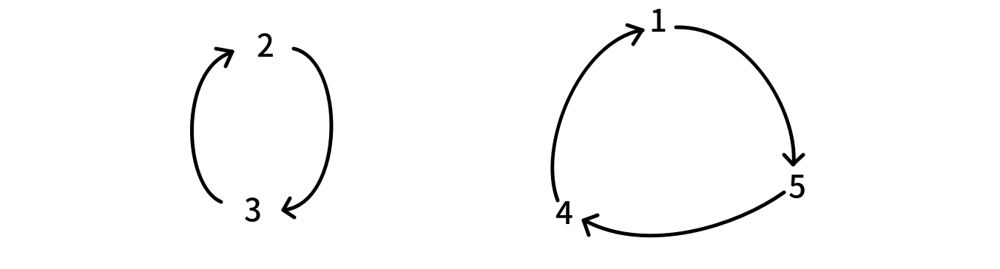
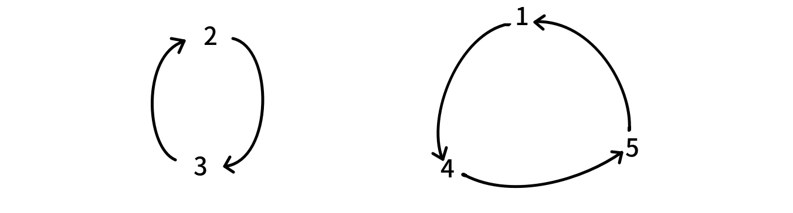

OI Wiki · prijevod · MatematikaOI Wiki · translation · Mathematics
Eksponencijalna funkcija izvodnicaExponential generating function
Sadržaj
Eksponencijalna funkcija izvodnica (exponential generating function, EGF) niza \(a\) definira se kao formalni red potencija:
Osnovne operacije
Zbrajanje i oduzimanje eksponencijalnih funkcija izvodnica isto je kao kod običnih funkcija izvodnica: zbrajaju se odgovarajući koeficijenti.
Promotrimo množenje eksponencijalnih funkcija izvodnica. Za dva niza \(a,b\) neka su njihove eksponencijalne funkcije izvodnice \(\hat{F}(x),\hat{G}(x)\); tada je
Stoga je za niz
eksponencijalna funkcija izvodnica upravo \(\hat{F}(x)\hat{G}(x)\).
Zatvoreni oblik
I za eksponencijalne funkcije izvodnice promatramo zatvoreni oblik.
Eksponencijalna funkcija izvodnica niza \(\langle 1,1,1,\cdots\rangle\) je:
jer Taylorovim razvojem \(\mathrm{e}^x\) oko \(x = 0\) dobivamo upravo taj beskonačni red.
Slično, eksponencijalna funkcija izvodnica geometrijskog niza \(\langle 1,p,p^2,\cdots\rangle\) je:
Eksponencijalna i obična funkcija izvodnica
Kako razumjeti eksponencijalnu funkciju izvodnicu? Eksponencijalnu funkciju izvodnicu niza \(a\) definirali smo kao:
No \(F(x)\) je zapravo i obična funkcija izvodnica niza \(\left\langle \dfrac{a_n}{n!} \right\rangle\).
Oba su tumačenja posve ispravna. Drugim riječima, različite funkcije izvodnice samo su različiti načini gledanja na problem.
Kombinatorno značenje polinomnog exp u EGF-u
Ako još niste učili polinomni exp, preskočite ovaj dio; riječ je o značenju koje proizlazi iz razumijevanja exp-a i koje u nekom smislu produbljuje razumijevanje EGF-a.
U EGF-u je \(f\) u \(f^n(x)\) po pretpostavci EGF, pa najprije promotrimo umnožak dvaju proizvoljnih EGF-ova
Koeficijent \([x^k]\hat{H}(x)\) umnoška dvaju EGF-ova zapravo je konvolucija. Promotrimo li \([x^k]\hat{H}(x)\) umnoška više EGF-ova, to je zapravo zbroj koeficijenata po svim načinima da se iz svakog EGF-a odabere jedan član \(x^{a_i}\) tako da je \(\sum_ia_i=k\). Gledano skupovno, to je broj načina da se \(n\) označenih elemenata podijeli na \(k>0\) označenih skupova.
Ako je \(k=0\), koeficijent je očito umnožak konstantnih članova izvornih EGF-ova, no određeni zahtjevi polinomnog \(\exp\)-a nalažu da slobodni član od \(f(x)\) u \(\exp\)-u mora biti \(0\); konkretni razlozi objašnjeni su u nastavku.
U definiciji multinomnog koeficijenta (vidi kombinatorno značenje multinomnih koeficijenata u odjeljku o permutacijama i kombinacijama) skupovi su po pretpostavci uređeni, ali u \(\exp(f(x))\) za \(f^k(x)\) svih \(k\) faktora \(f(x)\) daje isti EGF, a particija skupa očito je neuređena, pa koeficijent treba pomnožiti s \(\dfrac{1}{k!}\).
Neka \(F_k(n)\) označava broj načina da se \(n\) označenih elemenata podijeli na \(k\) nepraznih neuređenih skupova (zbog \(\exp\)-a zahtijeva se nepraznost), a \(f_i\) broj određenih kombinatornih struktura na konačnom skupu od \(i\) elemenata kad tih \(i\) elemenata čini jedan skup (to je izvorni EGF; način brojanja elemenata tog jednog skupa ovisi samo o veličini skupa). Tada je \(F_k(n)\)
Neka je EGF niza \(f_n\) jednak \(\hat{F}(x)\), tj.:
Neka je EGF od \(F_k(n)\) jednak \(G_k(x)\); tada je:
Za sve \(k \geq 0\):
Gore smo odnos izravno zapisali iz kombinatornog kuta; vezu između \(\exp(f(x))\) i \(f(x)\) možemo dokazati i preko rekurzije.
Neka ponovno \(F_k(n)\) označava broj načina da se \(n\) označenih elemenata podijeli na \(k\) nepraznih (neoznačenih) skupova, \(g_i\) broj unutarnjih rasporeda skupa od \(i\) elemenata (isto značenje kao \(f_i\) gore), neka je \(G(x)\) EGF od \(\{g_i\}\), a \(H_k(x)\) EGF od \(\{F_k(n)\}\).
Od \(n\) elemenata izdvojimo \(i\) elemenata kao jedan zasebno odvojeni skup: za to postoji \(g_i\) načina, a preostalih \(n-i\) elemenata čini \(k-1\) skupova na \(F_{k-1}(n-i)\) načina. No u konačnoj particiji svaki je skup jednom bio izabran kao zasebno odvojeni skup, pa je svaka particija izbrojena \(k\) puta i treba još podijeliti s \(k\).
Gornja granica slijedi iz particije na neprazne skupove: \(n-(k-1)\geq i\) (svaki od prvih \(k-1\) skupova ima barem jedan element), no ako vrijednosti \(F_{k-1}(n-i)\) izvan gornje granice stavimo na \(0\), ništa se ne mijenja.
Dobivenu rekurziju možemo rekurzivno razviti; rubni je slučaj \(k=1\), kada je \(H_1(x)=G(x)\).
Isto tako vrijedi:
Očito je definicija preko particije na neprazne skupove (\(g_0=0\)) u skladu sa samim značenjem; ako bismo dopustili prazan skup (\(g_0=1\)), u \([x^n]G^k\) pojavili bi se doprinosi iz \([x^n]G^y,y>k\) (odabir slobodnog člana u barem jednom \(G\)), došlo bi do višestrukog brojanja i ne bismo dobili traženu veličinu.
Gledano preko rekurzije, umnožak više EGF-ova može se shvatiti i kao kombiniranje nalik naprtnjači (knapsack), tj. kao postupak spajanja dviju skupina brojenih objekata.
Ukratko, značenje polinomnog \(\exp\)-a jest: koliko ima familija skupova izvedenih iz skupa označenih elemenata, odnosno ukupan broj načina da se skup podijeli na proizvoljan broj nepraznih podskupova.
Permutacije i kružne permutacije
Eksponencijalna funkcija izvodnica broja permutacija duljine \(n\) je
Kružna permutacija definira se kao raspored brojeva \(1,2,\cdots,n\) u krug; rasporedi koji se dobivaju rotacijom smatraju se jednakima (ali zrcaljenje se ne smatra jednakim).
Broj kružnih permutacija \(n\) brojeva očito je \((n-1)!\). Stoga je eksponencijalna funkcija izvodnica broja kružnih permutacija \(n\) brojeva
Drugim riječima, \(\exp \hat{Q}(x)=\hat{P}(x)\). No to je samo matematički izvod. Kako to intuitivno razumjeti: \(\exp\) EGF-a broja kružnih permutacija je EGF broja permutacija?
Permutacija se sastoji od nekoliko ciklusa. Na primjer, \(p=[4,3,2,5,1]\) ima dva ciklusa:

(dakle, povlačimo usmjereni brid od \(p_i\) prema \(i\))
Različiti ciklusi daju različite permutacije. Na primjer, promijenimo li drugi ciklus u

dobivamo permutaciju \([5,3,2,1,4]\).
Drugim riječima, broj permutacija duljine \(n\) jednak je broju načina da se
- \(1,2,\cdots,n\) podijeli na nekoliko skupova
- od svakog skupa napravi jedan ciklus.
A broj načina da brojevi jednog skupa čine ciklus očito je broj kružnih permutacija veličine tog skupa. Stoga je broj permutacija duljine \(n\) jednak: podijelimo \(1,2,\cdots,n\) na nekoliko skupova i pomnožimo brojeve kružnih permutacija pojedinih skupova.
To je intuitivno značenje polinomnog \(\exp\)-a.
Poopćenje:
- Ako je EGF broja označenih razapinjućih stabala na \(n\) vrhova jednak \(\hat{F}(x)\), onda je EGF broja označenih razapinjućih šuma na \(n\) vrhova jednak \(\exp \hat{F}(x)\); intuitivno, podijelimo \(n\) vrhova na nekoliko skupova i pomnožimo brojeve načina da svaki skup čini jedno razapinjuće stablo.
-
Ako je EGF broja označenih povezanih neusmjerenih grafova na \(n\) vrhova jednak \(\hat{F}(x)\), onda je EGF broja označenih neusmjerenih grafova na \(n\) vrhova jednak \(\exp \hat{F}(x)\), a potonji se lako izračuna:
\[ \exp \hat{F}(x)=\sum_{n\ge 0}2^{\binom{n}{2}}\frac{x^n}{n!} \]Dakle, za izračun prvoga dovoljan je jedan polinomni \(\ln\).
Pogledajmo sada neke primjene eksponencijalnih funkcija izvodnica.
Primjene
Broj deranžmana
Broj deranžmana
Deranžman duljine \(n\) definira se kao permutacija koja zadovoljava \(p_i\ne i\).
Odredite eksponencijalnu funkciju izvodnicu broja deranžmana.
Gledano preko ciklusa, deranžman je permutacija čiji ciklusi ne sadrže petlje, tj. nema ciklusa duljine \(1\). Eksponencijalna funkcija izvodnica potonjih je
pa je eksponencijalna funkcija izvodnica broja deranžmana \(\exp(-\ln(1-x)-x)\).
不动点 (Fiksna točka)
不动点 (Fiksna točka)
Zadatak: odredite koliko ima preslikavanja \(f:\{1,2,\cdots,n\}\to \{1,2,\cdots,n\}\) takvih da je
\(nk\le 2\times 10^6,1\le k\le 3\).
Povucimo brid od \(i\) prema \(f(i)\). Uvjet znači da iz bilo kojeg \(i\) nakon \(k\) koraka i nakon \(k-1\) koraka stižemo u isti vrh. Drugim riječima, ciklus svakog stabla s jednim ciklusom (pseudostabla) je petlja, a dubina ne prelazi \(k\) (korijen ima dubinu \(1\)). Takvo pseudostablo možemo promatrati kao korijensko stablo. Problem se stoga svodi na: prebrojati šume korijenskih stabala na \(n\) označenih vrhova dubine najviše \(k\).
Promotrimo korijenska stabla na \(n\) označenih vrhova dubine najviše \(k\) i pretpostavimo da je njihova funkcija izvodnica:
Računajmo \(\hat{F_k}(x)\) rekurzivno. Korijensko stablo dubine najviše \(k\) zapravo je nekoliko korijenskih stabala dubine najviše \(k-1\) čiji su korijeni svi spojeni na jedan vrh. Stoga je
Eksponencijalna funkcija izvodnica odgovora je tada \(\exp \hat{F}_k(x)\); treba izračunati njezin \(n\)-ti član.
Lust
Lust
Zadan je niz od \(n\) brojeva \(a_1,a_2,\cdots,a_n\) i varijabla \(s\) s početnom vrijednošću \(0\). Sljedeći postupak ponavlja se \(k\) puta:
- Iz \(1,2,\cdots,n\) jednoliko slučajno odabere se \(x\).
- Varijabli \(s\) doda se \(\prod_{i\ne x}a_i\).
- \(a_x\) se smanji za jedan.
Odredite očekivanu vrijednost \(s\) nakon \(k\) operacija.
\(1\le n\le 5000,1\le k\le 10^9,0\le a_i\le 10^9\).
Pretpostavimo da se nakon \(k\) operacija \(a_i\) smanjio za \(b_i\); tada je zapravo
pa se problem zapravo svodi na određivanje očekivane vrijednosti \(\prod_{i=1}^n (a_i- b_i)\) nakon \(k\) operacija.
Računajmo zbroj vrijednosti \(\prod_{i=1}^n (a_i- b_i)\) po svim mogućnostima, a na kraju podijelimo s \(n^k\).
Broj nizova od \(k\) operacija u kojima se \(i\) pojavljuje \(b_i\) puta je
što nalikuje koeficijentima pri množenju eksponencijalnih funkcija izvodnica.
Neka je eksponencijalna funkcija izvodnica za \(a_j\)
Tada je odgovor
Da bismo odgovor brzo izračunali, \(F_j(x)\) pretvaramo u zatvoreni oblik:
Dakle,
gdje je \(\prod_{j=1}^n(a_j-x)\) polinom stupnja \(n\) koji se može izračunati grubom silom. Neka je njegov razvoj \(\sum_{i=0}^nc_ix^i\); tada je
Dovoljno je izračunati koeficijent uz \(x^k\) u tom polinomu.
Contents
The exponential generating function (EGF) of a sequence \(a\) is defined as the formal power series:
Basic operations
Addition and subtraction of exponential generating functions are the same as for ordinary generating functions: the corresponding coefficients are added.
Consider the multiplication of exponential generating functions. For two sequences \(a,b\), let their exponential generating functions be \(\hat{F}(x),\hat{G}(x)\); then
Therefore the sequence
has exponential generating function \(\hat{F}(x)\hat{G}(x)\).
Closed form
We likewise consider the closed form of exponential generating functions.
The exponential generating function of the sequence \(\langle 1,1,1,\cdots\rangle\) is:
because the Taylor expansion of \(\mathrm{e}^x\) at \(x = 0\) gives exactly this infinite series.
Similarly, the exponential generating function of the geometric sequence \(\langle 1,p,p^2,\cdots\rangle\) is:
Exponential and ordinary generating functions
How should we understand exponential generating functions? We defined the exponential generating function of a sequence \(a\) as:
But \(F(x)\) is in fact also the ordinary generating function of the sequence \(\left\langle \dfrac{a_n}{n!} \right\rangle\).
Both interpretations are perfectly fine. In other words, different generating functions are merely different ways of looking at a problem.
Combinatorial meaning of polynomial exp in EGFs
If you have not yet learned polynomial exp, skip this part for now; this is a meaning derived from understanding exp, and in some sense it deepens the understanding of EGFs.
In an EGF, the \(f\) in \(f^n(x)\) is by default an EGF, so let us first consider the product of any two EGFs
The coefficient \([x^k]\hat{H}(x)\) obtained by multiplying two EGFs is in fact a convolution. If we consider \([x^k]\hat{H}(x)\) obtained by multiplying several EGFs, it is in fact the sum of the coefficients over all ways of choosing one term \(x^{a_i}\) from each EGF such that \(\sum_ia_i=k\). From the viewpoint of sets, this is the number of ways to partition \(n\) labeled elements into \(k>0\) labeled sets.
If \(k=0\), the coefficient is obviously the product of the constant terms of the original EGFs, but certain requirements of polynomial \(\exp\) force the constant term of the \(f(x)\) in \(\exp\) to be \(0\); the concrete reasons are explained below.
In the definition of multinomial coefficients (see the combinatorial meaning of multinomial coefficients in the section on permutations and combinations) the sets are ordered by default, but in \(\exp(f(x))\), for \(f^k(x)\) the \(k\) factors \(f(x)\) multiplied together give the same EGF, while a set partition is obviously unordered, so the coefficient should be multiplied by \(\dfrac{1}{k!}\).
Let \(F_k(n)\) be the number of ways to partition \(n\) labeled elements into \(k\) nonempty unordered sets (nonemptiness is required because of \(\exp\)), and let \(f_i\) be the number of certain combinatorial structures on a finite set of \(i\) elements when those \(i\) elements form one set (this is the original EGF; the way of counting the elements of this one set depends only on the size of the set). Then \(F_k(n)\) is
Let the EGF of \(f_n\) be \(\hat{F}(x)\), that is:
Let the EGF of \(F_k(n)\) be \(G_k(x)\); then:
For all \(k \geq 0\):
Above we wrote down the relation directly from the combinatorial viewpoint; we can also prove the relation between \(\exp(f(x))\) and \(f(x)\) via a recurrence.
Again let \(F_k(n)\) be the number of ways to partition \(n\) labeled elements into \(k\) nonempty (unlabeled) sets, let \(g_i\) be the number of internal arrangements of a set of \(i\) elements (same meaning as \(f_i\) above), let \(G(x)\) be the EGF of \(\{g_i\}\), and let \(H_k(x)\) be the EGF of \(\{F_k(n)\}\).
Taking \(i\) of the \(n\) elements as one separately split-off set can be done in \(g_i\) ways, and the remaining \(n-i\) elements form \(k-1\) sets in \(F_{k-1}(n-i)\) ways. However, in the final partition every set of a given partition gets enumerated as the separately split-off set, so each partition is counted \(k\) times and we still have to divide by \(k\).
The upper bound follows from the partition into nonempty sets: \(n-(k-1)\geq i\) (each of the first \(k-1\) sets has at least one element), but if the values \(F_{k-1}(n-i)\) beyond the enumeration bound are set to \(0\), nothing changes.
Having obtained the recurrence, we can expand it recursively; the base case is \(k=1\), where \(H_1(x)=G(x)\).
Likewise we have:
Obviously, defining it as a partition into nonempty sets (\(g_0=0\)) agrees with the intended meaning; if we allowed the empty set (\(g_0=1\)), then \([x^n]G^k\) would receive contributions from \([x^n]G^y,y>k\) (choosing the constant term in at least one \(G\)), there would be overcounting, and we would not obtain the desired quantity.
From the viewpoint of the recurrence, the product of several EGFs can also be seen as a knapsack-like combination (the process of merging two groups of counted objects).
In summary, the meaning of polynomial \(\exp\) is: the number of set families generated from a set of labeled elements, or the total number of ways to partition the set into an arbitrary number of nonempty subsets.
Permutations and circular permutations
The exponential generating function of the number of permutations of length \(n\) is
A circular permutation is defined as an arrangement of \(1,2,\cdots,n\) in a circle; arrangements obtained by rotation are considered equivalent (but reflections are not considered equivalent).
The number of circular permutations of \(n\) numbers is obviously \((n-1)!\). Therefore the exponential generating function of the number of circular permutations of \(n\) numbers is
That is, \(\exp \hat{Q}(x)=\hat{P}(x)\). But this is only a mathematical derivation. How can we understand intuitively that the \(\exp\) of the EGF of circular permutations is the EGF of permutations?
A permutation consists of several cycles. For example, \(p=[4,3,2,5,1]\) has two cycles:
(that is, we draw a directed edge from \(p_i\) to \(i\))
Different cycles lead to different permutations. For example, if we change the second cycle to
then the corresponding permutation is \([5,3,2,1,4]\).
In other words, the number of permutations of length \(n\) is the number of ways to
- partition \(1,2,\cdots,n\) into several sets
- form a cycle from each set.
And the number of ways for the numbers of one set to form a cycle is obviously the number of circular permutations of the size of that set. Therefore the number of permutations of length \(n\) is: partition \(1,2,\cdots,n\) into several sets and take the product of the numbers of circular permutations of the sets.
This is the intuitive understanding of polynomial \(\exp\).
Generalizing:
- If the EGF of the number of labeled spanning trees on \(n\) vertices is \(\hat{F}(x)\), then the EGF of the number of labeled spanning forests on \(n\) vertices is \(\exp \hat{F}(x)\); intuitively, partition the \(n\) vertices into several sets and take the product of the numbers of ways for each set to form a spanning tree.
-
If the EGF of the number of labeled connected undirected graphs on \(n\) vertices is \(\hat{F}(x)\), then the EGF of the number of labeled undirected graphs on \(n\) vertices is \(\exp \hat{F}(x)\), and the latter is easy to compute:
\[ \exp \hat{F}(x)=\sum_{n\ge 0}2^{\binom{n}{2}}\frac{x^n}{n!} \]Therefore, to compute the former, a single polynomial \(\ln\) suffices.
Next let us look at some applications of exponential generating functions.
Applications
Derangement numbers
Derangement numbers
A derangement of length \(n\) is defined as a permutation satisfying \(p_i\ne i\).
Find the exponential generating function of the derangement numbers.
From the viewpoint of cycles, a derangement is a permutation whose cycles contain no self-loops, i.e., no cycle of length \(1\). The exponential generating function of the latter is
so the exponential generating function of the derangement numbers is \(\exp(-\ln(1-x)-x)\).
不动点 (Fixed point)
不动点 (Fixed point)
Problem: find the number of maps \(f:\{1,2,\cdots,n\}\to \{1,2,\cdots,n\}\) such that
\(nk\le 2\times 10^6,1\le k\le 3\).
Draw an edge from \(i\) to \(f(i)\). The condition means that from any \(i\), walking \(k\) steps and walking \(k-1\) steps reach the same vertex. In other words, the cycle of every unicyclic tree (pseudotree) is a self-loop and the depth does not exceed \(k\) (the root has depth \(1\)). Such a pseudotree can be treated as a rooted tree. So our problem becomes: count the forests of rooted trees on \(n\) labeled vertices with depth at most \(k\).
Consider rooted trees on \(n\) labeled vertices with depth at most \(k\), and suppose their generating function is:
We compute \(\hat{F_k}(x)\) recursively. A rooted tree of depth at most \(k\) is in fact several rooted trees of depth at most \(k-1\) whose roots are all attached to one vertex. Therefore
Then the exponential generating function of the answer is \(\exp \hat{F}_k(x)\); we just need its \(n\)-th term.
Lust
Lust
You are given a sequence of \(n\) numbers \(a_1,a_2,\cdots,a_n\) and a variable \(s\) with initial value \(0\). You must repeat the following operation \(k\) times:
- Choose \(x\) uniformly at random from \(1,2,\cdots,n\).
- Add \(\prod_{i\ne x}a_i\) to \(s\).
- Decrease \(a_x\) by one.
Find the expected value of \(s\) after \(k\) operations.
\(1\le n\le 5000,1\le k\le 10^9,0\le a_i\le 10^9\).
Suppose that after \(k\) operations \(a_i\) has decreased by \(b_i\); then in fact
so our problem actually becomes finding the expected value of \(\prod_{i=1}^n (a_i- b_i)\) after \(k\) operations.
Let us compute the sum of \(\prod_{i=1}^n (a_i- b_i)\) over all outcomes and divide by \(n^k\) at the end.
The number of sequences of \(k\) operations in which \(i\) appears \(b_i\) times is
which resembles the coefficients in the multiplication of exponential generating functions.
Let the exponential generating function for \(a_j\) be
Then the answer is
To compute the answer quickly, we convert \(F_j(x)\) into closed form:
Therefore we get
where \(\prod_{j=1}^n(a_j-x)\) is a polynomial of degree \(n\) that can be computed by brute force. Suppose its expansion is \(\sum_{i=0}^nc_ix^i\); then
It suffices to compute the coefficient of \(x^k\) in this polynomial.